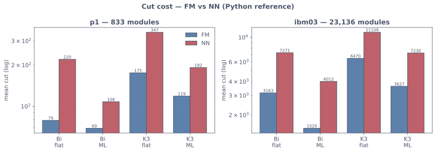
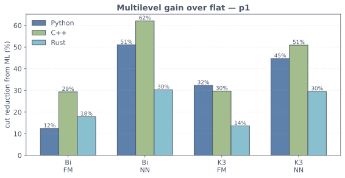
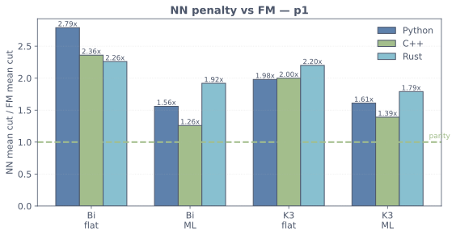
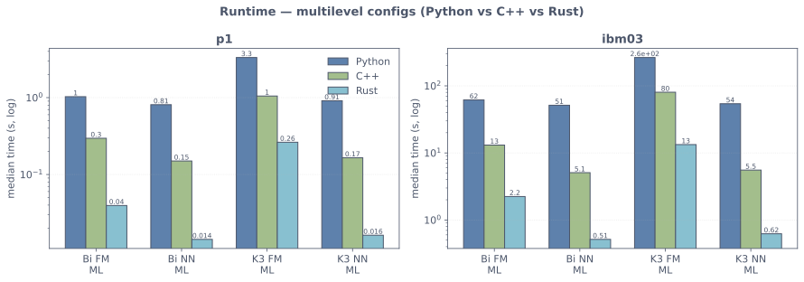

layout: true class: typo, typo-selection --- count: false class: nord-dark, middle, center # ✂️ FM vs NN ## Two local-search refiners for multilevel hypergraph partitioning ### 🧲 🔒 ⚡ 🎯 @luk036 👨💻 · 2026 📅 --- ### 📋 Agenda .pull-left[ **Part 1 — Background** 🧭 - Hypergraph partitioning - The FM algorithm - The "complicated" machinery 🧲 **Part 2 — The Pure Local Search** ⚡ - NN: greedy hill-climbing - FM pass vs NN pass - Design patterns 🧩 ] .pull-right[ **Part 3 — The Refactor** 🔧 - Python · C++ · Rust changes - Cross-port parity 🌍 **Part 4 — The Benchmark** 📊 - Methodology - Cut quality & runtime - Findings 🎯 ] --- class: nord-light, middle, center ## 🧭 Part 1 — Background --- ### ✂️ Hypergraph Partitioning Partition the modules $V$ of a hypergraph into $k$ parts, minimizing the **cut** while keeping the parts **balanced**: $$ \color{#bf616a}{\text{cut}(\Pi)} \;=\; \sum_{n \in N} \color{#88c0d0}{w(n)} \cdot \bigl[\,|\{\,p(v) : v \in n\,\}| > 1\,\bigr] $$ $$ \text{subject to} \quad \color{#a3be8c}{W_k} \;=\; \sum_{v : p(v)=k} \color{#ebcb8b}{w(v)} \;\ge\; \color{#5e81ac}{\text{lowerbound}} $$ - $\color{#88c0d0}{w(n)}$ — net weight 🪢 - $\color{#ebcb8b}{w(v)}$ — module weight ⚖️ - $\color{#5e81ac}{\text{lowerbound}}$ — balance tolerance floor 📐 > A **combinatorial** problem — NP-hard, solved by local search. 🔁 --- ### 🧲 The Fiduccia–Mattheyses (FM) Algorithm **Move a module, track the *gain*, keep the best prefix.** $$ \color{#a3be8c}{g(v)} \;=\; \underbrace{\color{#88c0d0}{\text{ED}(v)}}_{\text{external degree}} \;-\; \underbrace{\color{#bf616a}{\text{ID}(v)}}_{\text{internal degree}} $$ - Positive gain → the move **reduces** the cut ✅ - FM also takes **negative-gain** moves to escape local minima 🕳️ - Then it **rolls back** to the best prefix seen in the pass ↩️ > Gain **buckets** pick the best move in $O(1)$. 🪣 --- ### 🔁 One FM Pass — the "Complicated" Machinery .mermaid[ <pre> graph LR A["gain buckets\nkeyed by gain"] --> B["pick highest-gain\nfree move"] B --> C{"negative gain ?"} C -->|"yes"| D["take snapshot\n(journal of moves)"] C -->|"no"| E["apply move"] D --> E E --> F["LOCK v\n(at most once per pass)"] F --> G["update neighbour gains"] G --> H{"more moves ?"} H -->|"yes"| B H -->|"no"| I["rollback to\nbest prefix"] I --> J["next pass"] style A fill:#e3f2fd,stroke:#1565c0,stroke-width:3px style D fill:#fff9c4,stroke:#f57f17,stroke-width:3px style F fill:#fadbd8,stroke:#c0392b,stroke-width:3px style I fill:#d1c4e9,stroke:#6a1b9a,stroke-width:3px style J fill:#d5f5e3,stroke:#2e7d32,stroke-width:3px </pre> ] --- ### 🧱 Three Pieces of FM Sophistication .pull-left[ **🪣 Gain buckets** - Bounded priority queue - $O(1)$ max / key-update **🔒 Vertex locking** - A module moves **once** per pass - Prevents thrashing ] .pull-right[ **📸 Snapshot / rollback** - Journal of moves - Undo back to the **best prefix** **🧲 Negative-gain moves** - Hill-climbing to escape local minima - Requires the rollback safety net > Powerful — but *three* moving parts. Can we make a **simpler** refiner? 🤔 ] --- class: nord-light, middle, center ## ⚡ Part 2 — The Pure Local Search --- ### ⚡ NN — the *No-Nonsense* Refiner **Greedy hill-climbing.** Take the best move **only if it improves**, then stop. $$ \color{#5e81ac}{g_{\max}} \;>\; 0 \quad\Longrightarrow\quad \text{apply move} \qquad\qquad \color{#bf616a}{g_{\max}} \;\le\; 0 \quad\Longrightarrow\quad \text{stop} $$ .mermaid[ <pre> graph LR A["select max-gain move"] --> B{"positive gain ?"} B -->|"no"| C["STOP\n(local optimum)"] B -->|"yes"| D["check balance"] D --> E["apply move\n(no lock, no snapshot)"] E --> A style A fill:#e3f2fd,stroke:#1565c0,stroke-width:3px style C fill:#d5f5e3,stroke:#2e7d32,stroke-width:3px style E fill:#e8f5e9,stroke:#43a047,stroke-width:3px </pre> ] --- ### 📉 Why NN Terminates — Monotonicity Only **strictly improving** moves are accepted, so the cut **never increases**: $$ \color{#5e81ac}{\text{cost}_{t+1}} \;=\; \color{#5e81ac}{\text{cost}_t} - \underbrace{\color{#a3be8c}{g_{\max}}}_{>\,0} \;<\; \color{#5e81ac}{\text{cost}_t} $$ - The cut is a **non-negative integer** 🔢 - Each move strictly decreases it → **finitely many** moves ✅ - No locking needed — an improving move can never **cycle** 🚫🔁 - No snapshot needed — we **never** want to undo an improving move ↩️❌ > Monotone descent ⇒ termination. **No safety net required.** 🎯 --- ### ⚖️ FM Pass vs NN Pass .pull-left[ **FM** 🧲 — best *prefix* ```text while not empty: v, g = select_max() if g < 0: snapshot() lock(v) apply(v); update() rollback_to_best_prefix() ``` - accepts $g < 0$ 🕳️ - locks + journals 🔒📸 ] .pull-right[ **NN** ⚡ — greedy descent ```text while not empty: v, g = select_max() if g <= 0: break check_balance(v) apply(v); update() ``` - accepts only $g > 0$ ✅ - **no** lock, **no** journal 🚫🔒 > Same skeleton — **only the single-pass hook differs.** 🧩 ] --- ### 🧩 Design Patterns Already in Play .mermaid[ <pre> graph TD PB["PartMgrBase\n(Template Method)"] PB --> OP["_optimize_1pass()\nthe overridable hook"] OP --> FM["FMPartMgr\nbuckets + lock + rollback"] OP --> NN["NNPartMgr\ngreedy, no lock"] PB --> GM["GainMgr\n(Strategy)"] PB --> CM["ConstrMgr\n(Strategy)"] GM --> GC["GainCalc"] style PB fill:#e3f2fd,stroke:#1565c0,stroke-width:3px style OP fill:#fff9c4,stroke:#f57f17,stroke-width:3px style FM fill:#d1c4e9,stroke:#6a1b9a,stroke-width:3px style NN fill:#d5f5e3,stroke:#2e7d32,stroke-width:3px style GM fill:#e3f2fd,stroke:#1565c0,stroke-width:3px style CM fill:#e3f2fd,stroke:#1565c0,stroke-width:3px style GC fill:#e3f2fd,stroke:#1565c0,stroke-width:3px </pre> ] - **Template Method** — the skeleton lives in the base 🔒 - **Strategy** — gain / constraint managers injected 🔌 --- class: nord-light, middle, center ## 🔧 Part 3 — The Refactor --- ### 🐍 Python: `NNPartMgr` Becomes a Pure Hook Before — the pass carried FM-style bookkeeping: ```python def _optimize_1pass(self, part): ... self.gain_mgr.update_move(part, move_info_v) self.gain_mgr.update_move_v(move_info_v, gainmax) self.validator.update_move(move_info_v) part[v] = to_part ``` After — bucket-based greedy descent, **no lock, no journal**: ```python def _optimize_1pass(self, part): totalgain = 0 while not self.gain_mgr.is_empty(): move_info_v, gainmax = self.gain_mgr.select(part) if gainmax <= 0: break if not self.validator.check_constraints(move_info_v): continue ... self.totalcost -= totalgain ``` > The class shrank from **194 → 30 lines**. 🪄 --- ### 🔧 C++: Remove the Last FM Vestige The C++ `NNPartMgr` already shared the FM skeleton — but still **locked** each move: ```cpp if (gainmax < 0) { break; } ... this->gain_mgr.lock(move_info_v.to_part, move_info_v.v); // ❌ FM machinery this->gain_mgr.update_move(part, move_info_v); ``` The fix (**2 lines**): ```cpp if (gainmax <= 0) { break; } // ✅ non-positive ... this->gain_mgr.update_move(part, move_info_v); // ✅ no lock ``` - Threshold `< 0` → `<= 0` — a zero-gain move is **non-improving** 🚫 - Once unlocked, accepting $g = 0$ could **cycle** 🔁 - `FMPartMgr` / `PartMgrBase` left **untouched** 🧲 --- ### 🇷 Rust: the Gain-Manager Re-Port The Rust `PartMgr` trait was already collapsed — but the **bucket queue** was a lazy rewrite with the FM semantics wrong. The multilevel harness exposed five real defects: - **Stale max**: a single `current_max`, no live-entry bookkeeping → popped keys popped again, and ibm03 **looped forever** 🔁 - **`modify_key`** wrote an absolute key from a delta and hit the wrong bucket 🪣 - **`set_key`** had insert side effects (write-only in FM) ✍️ - **ML collapse to cut 0**: `update_move` used a stale `weight_cache`, so **balance was ignored** during refinement ⚖️ - k-way 3-pin nets lost the `weight = -weight` sign flip (C++ has it) ↩️ The fix — one commit (`#23`): `present`/`node_key` bookkeeping, additive `modify_key`, locks cleared on init, mode-aware updates. > Verified: **245 tests green**, clippy clean, harness completes 80 records. ✅ --- ### 🌍 Cross-Port Parity — Python · C++ · Rust | aspect | Python | C++ | Rust | |:--|:--|:--|:--| | Structure | `PartMgrBase` subclass | `PartMgrBase` subclass | `PartMgr` trait | | Override point | `_optimize_1pass` | `_optimize_1pass` | `optimize_1pass` | | Gain management | FM gain buckets 🪣 | FM gain buckets 🪣 | FM gain buckets 🪣 | | Snapshot / rollback | none 🚫 | none 🚫 | none 🚫 | | Per-move locking | none 🚫 | none 🚫 | none 🚫 | | Threshold | `gainmax <= 0` | `gainmax <= 0` | `gainmax <= 0` | > Three ports, **one** behaviour: a pure, monotone local search. 🎯 --- class: nord-light, middle, center ## 📊 Part 4 — The Benchmark --- ### 🔬 The 8 Configurations .mermaid[ <pre> graph TD R["refiner"] --> FM["FM\nbuckets + lock"] R --> NN["NN\ngreedy"] S["scale"] --> FL["flat\n(single level)"] S --> ML["multilevel"] K["k"] --> BI["bi (k = 2)"] K --> KW["k-way (k = 3)"] style R fill:#fff9c4,stroke:#f57f17,stroke-width:3px style S fill:#fff9c4,stroke:#f57f17,stroke-width:3px style K fill:#fff9c4,stroke:#f57f17,stroke-width:3px style FM fill:#d1c4e9,stroke:#6a1b9a,stroke-width:3px style NN fill:#d5f5e3,stroke:#2e7d32,stroke-width:3px style ML fill:#e3f2fd,stroke:#1565c0,stroke-width:3px style FL fill:#e3f2fd,stroke:#1565c0,stroke-width:3px </pre> ] $$ \{\text{FM}, \text{NN}\} \times \{\text{flat}, \text{ML}\} \times \{k{=}2, k{=}3\} \;=\; \color{#bf616a}{8}\ \text{configurations} $$ --- ### 📏 Methodology .pull-left[ **Testcases** 🗺️ - `p1` — 833 modules, 902 nets - `ibm03` — 23,136 modules, 27,401 nets **Runs** 🔢 - seeds $0 \dots 4$ (5 each) - SplitMix64 initial partition 🎲 - `bal_tol = 0.45` - ML `limitsize = 50` ] .pull-right[ **Metrics** 📐 - **best** & **mean** cut cost ✂️ - **median** wall-clock ⏱️ - (median ⇒ robust to noise 🛡️) **Harnesses** ⚙️ - Python: `benchmarks/compare_fm_nn.py` - C++: `bench/BenchFMNN.cpp` (`xmake`) - Rust: `examples/fmnn_compare.rs` (`cargo`) > Same PRNG in all three ports ⇒ a seed means the **same** start. 🎲 ] --- ### 📊 Results — `p1` (833 modules) .font-sm[ | k | algo | ML | py best | py mean | cpp best | cpp mean | rs best | rs mean | |:--|:--|:--|--:|--:|--:|--:|--:|--:| | 2 | FM | no | 72 | 79.0 | 73 | 96.4 | 84 | 99.4 | | 2 | FM | yes | **56** | 69.2 | **61** | 68.2 | 72 | 81.6 | | 2 | NN | no | 211 | 220.2 | 211 | 227.4 | 211 | 224.8 | | 2 | NN | yes | 95 | 108.0 | 65 | 86.2 | 146 | 156.6 | | 3 | FM | no | 144 | 175.4 | 147 | 173.8 | 144 | 160.4 | | 3 | FM | yes | 111 | 118.8 | 118 | 122.2 | 115 | 138.6 | | 3 | NN | no | 330 | 346.8 | 330 | 346.8 | 333 | 352.2 | | 3 | NN | yes | 135 | 191.8 | 134 | 170.2 | 199 | 248.2 | ] > Mean cut over 5 seeds. 🎲 --- ### 📊 Results — `ibm03` (23,136 modules) .font-sm[ | k | algo | ML | py best | py mean | cpp best | cpp mean | rs best | rs mean | |:--|:--|:--|--:|--:|--:|--:|--:|--:| | 2 | FM | no | 2438 | 3162.8 | 1598 | 2710.4 | 2007 | 2878.8 | | 2 | FM | yes | **1240** | 1519.6 | 1556 | 1705.0 | 1253 | 1707.0 | | 2 | NN | no | 6865 | 7270.8 | 6866 | 7271.0 | 6866 | 7268.2 | | 2 | NN | yes | 3265 | 4012.8 | 3393 | 3921.6 | 5572 | 5915.0 | | 3 | FM | no | 5733 | 6469.8 | 6154 | 6403.8 | 6295 | 7053.0 | | 3 | FM | yes | **2833** | 3627.0 | **2808** | 3508.2 | 1524 | 2866.2 | | 3 | NN | no | 10508 | 11109.0 | 10485 | 11128.2 | 10447 | 11055.8 | | 3 | NN | yes | 6465 | 7229.8 | 6462 | 6897.8 | 6942 | 7765.6 | ] > FM+ML wins on **both** size scales. 🏆 --- ### ✂️ Cut Quality — FM vs NN (three ports) <p align="center"> <p></p> </p> - **FM < NN** everywhere (lower is better) 📉 - **ML** shrinks both bars (note the log axis) 🔁 - NN's gap to FM is largest **flat**, smaller **with ML** 🎯 - All ports agree on the ranking; Rust NN+ML trails py/cpp 🦀 --- ### 📈 Multilevel Gain over Flat <p align="center"> <p></p> </p> - Coarsening cuts the cost by **12–62 %** 🔁 - **NN gains the most** (e.g. Bi: 51 % 🐍 / 62 % 🔩) - Rust NN gains are smaller (30 %) — greedy path, not bookkeeping (see #23) 🦀 - ML *rescues* NN from being a weak standalone heuristic 🆘 --- ### ⚖️ NN Penalty vs FM <p align="center"> <p></p> </p> - Flat bi: NN is **2.3–2.8×** worse 😬 - ML bi: py **1.6×** / C++ **1.3×** / Rust **1.9×** — ML **closes** the gap 🤝 - k-way: ~**1.6–2.2×** in both settings 🔢 > NN is not a replacement for FM — it is a **cheap companion**. 🪙 --- ### ⏱️ Runtime — Python 🐍 vs C++ 🔩 vs Rust 🦀 <p align="center"> <p></p> </p> - C++ is ~**5–50× faster** than Python 🚀 - Rust (release) is **fastest** — e.g. ibm03 Bi NN-ML: 0.5 s vs 5.1 s C++ 🦀 - ML ≫ flat in cost (coarsening + recursion) 🐢 - k = 3 ≫ k = 2 🔢 > Wall-clock is **not** cross-comparable — trends are. 📐 --- ### 📋 Findings .pull-left[ **Quality** 🏆 - **FM + ML** is best everywhere - NN flat is the **weakest** 😬 - ML lifts NN close to FM 🎯 **Speed** ⚡ - NN flat is **10–100×** faster - Use it when the cut is secondary ⏱️ ] .pull-right[ **Structure** 🧩 - Same skeleton, **one** hook 🪝 - NN = **pure, monotone** descent 📉 - No lock, no snapshot — **simpler** 🧹 **Ports** 🌍 - Python · C++ · Rust now **identical** ✅ - Same thresholds, same results 📐 - Rust needed a one-commit gain re-port (#23) 🔧 ] --- ### 🧭 Choosing a Refiner .mermaid[ <pre> graph TD Q{"what matters most ?"} -->|"best cut"| A["FM + ML 🏆"] Q -->|"speed"| B["NN flat ⚡"] Q -->|"speed AND decent cut"| C["NN + ML 🎯"] Q -->|"robust default"| D["FM + ML ✅"] style Q fill:#fff9c4,stroke:#f57f17,stroke-width:3px style A fill:#d1c4e9,stroke:#6a1b9a,stroke-width:3px style B fill:#d5f5e3,stroke:#2e7d32,stroke-width:3px style C fill:#e8f5e9,stroke:#43a047,stroke-width:3px style D fill:#e3f2fd,stroke:#1565c0,stroke-width:3px </pre> ] > NN is the multilevel **workhorse for cheap refinement**; FM is the quality anchor. ⚓ --- ### 🛡️ Data Quality Note - One Python run (`p1`, Bi FM ML, seed 2) first recorded **3355 s** 📈 - Re-measured in isolation: **0.99 s** (same cut, 56) ✅ - Cause: the unattended background process was **starved/suspended** 😴 - ➜ a **wall-clock artifact**, not a code defect 🐛❌ - ➜ the p1 data was re-collected; medians used throughout 🛡️ - The Rust harness initially **looped forever** on ibm03 (stale bucket max) 🔁 - ➜ fixed by the gain-manager re-port `#23`; 80 records now complete ✅ > Trust medians and re-measure before believing an outlier. 🔬 --- ### 🧠 Key Takeaways **Algorithm** ⚡ - NN = a **pure local search**: only improving moves ⇒ **monotone** descent 📉 - No locking, no snapshot, no rollback — **three fewer moving parts** 🧹 - Termination is **guaranteed** by a non-negative integer objective 🔢 **Patterns** 🧩 - **Template Method** for the pass skeleton 🦴 - **Strategy** for gain / constraints 🔌 - One override ⇒ FM and NN coexist 🤝 **Empirically** 📊 - FM wins on **quality**, NN on **speed** 🏁 - **Multilevel is the equalizer** — helps NN the most 🔁 - FM + ML is the **best default** 🏆 --- count: false class: nord-dark, middle, center # 🙋 Q&A **FM vs NN — Local Search in Multilevel Partitioning** ### Questions? Discussion? 💬 --- count: false class: nord-dark, middle, center # 👏 Thank You ## Pure descent. Multilevel power. 🎯 Slides built with Remark.js 🎉 | KaTeX 📐 | Mermaid 🧩 | Nord Theme 🌙